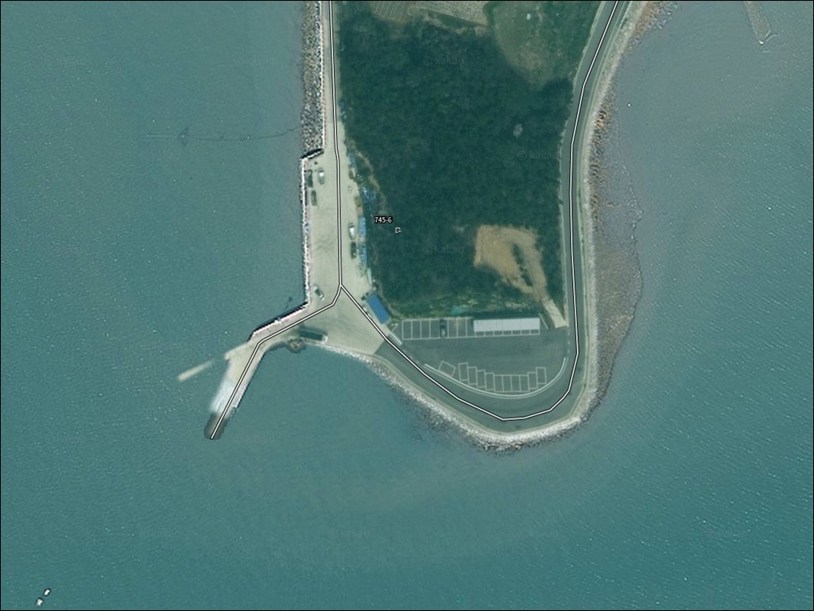
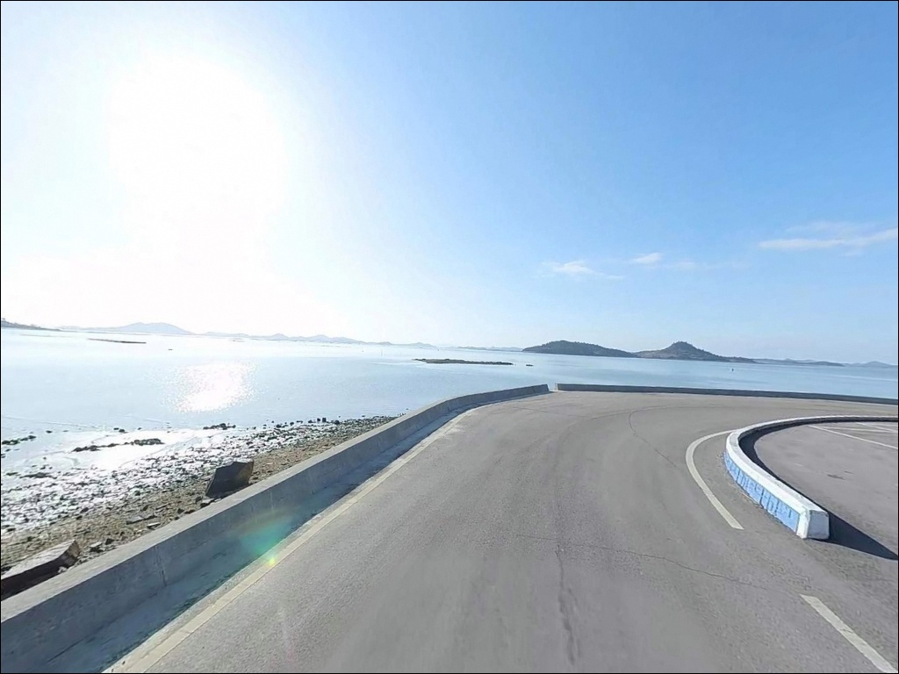
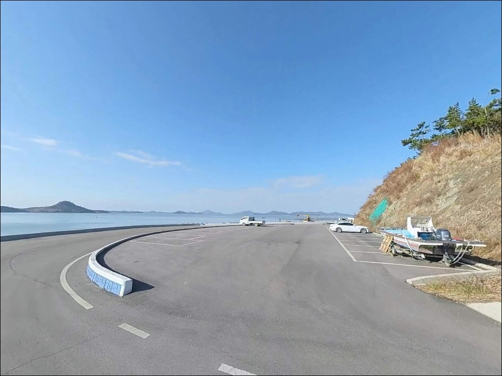
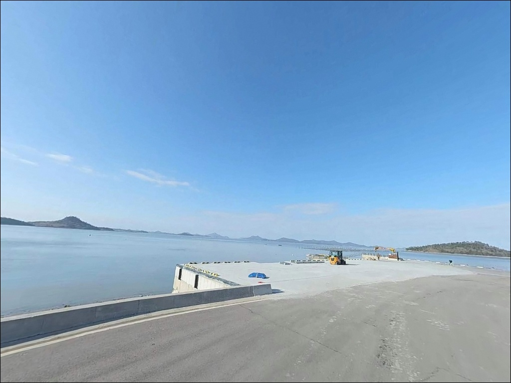
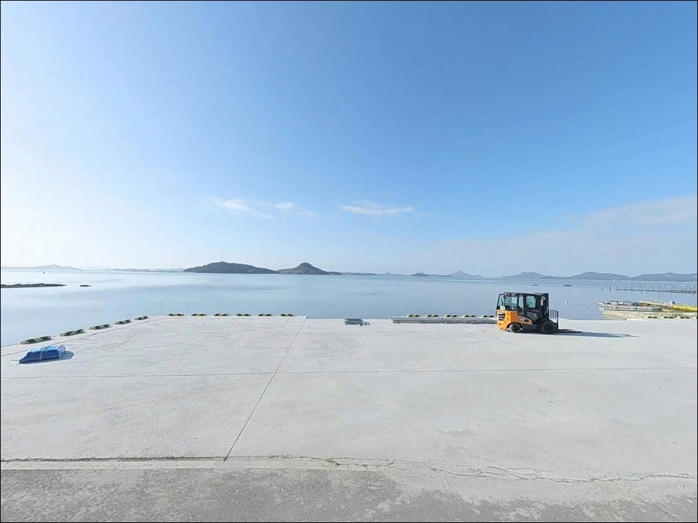
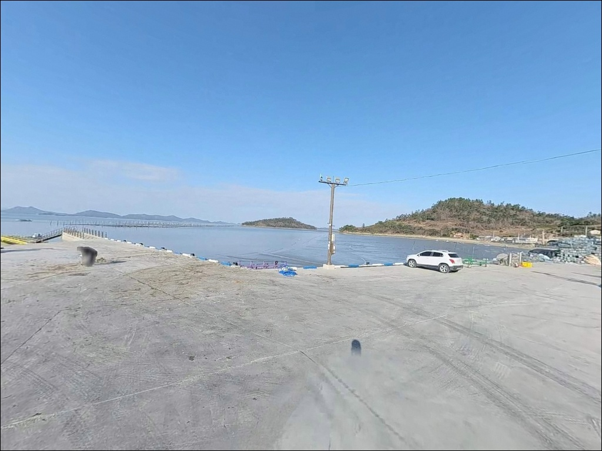
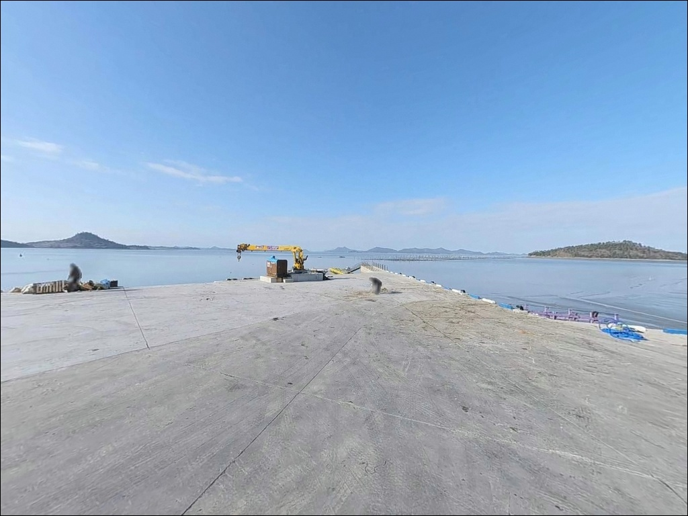
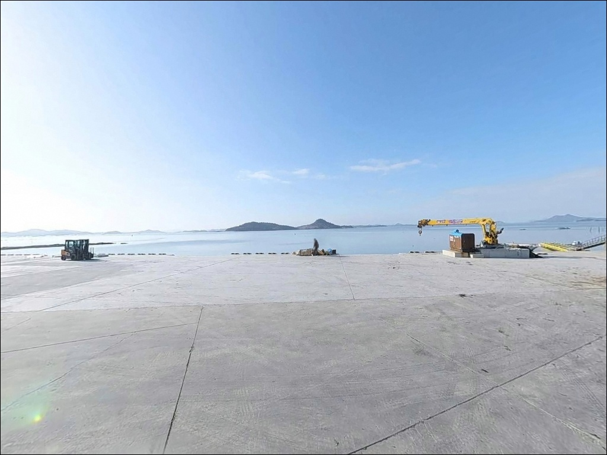
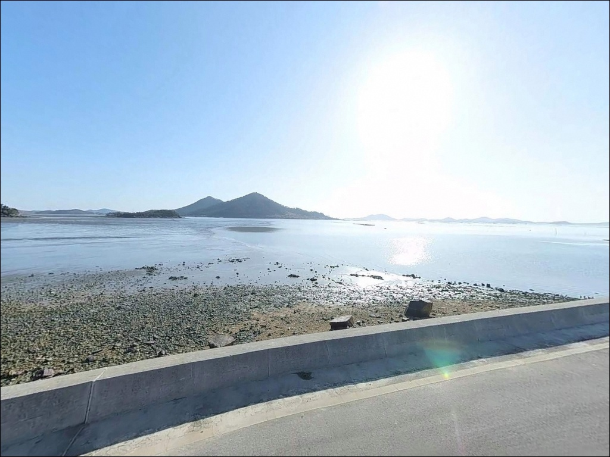

이 페이지에는 광고(제휴 링크 포함)가 있으며, 광고 링크를 통해 구매하면 운영자가 판매 수익 또는 수수료를 받을 수 있습니다. 포인트 사진: 카카오맵 스카이뷰·로드뷰. 이 페이지의 지도·사진 이미지는 카카오맵의 실제 서비스 이미지와 다를 수 있습니다.

외우목 선착장(구대리 선착장)
전남 신안군 안좌면 구대리 산 96-80
서해 소형 선착장을 물때 계산 없이 찾아가면
간조 시 수심이 얕아져
어떤 채비를 써도 제대로 운용하기 어려운
상황을 맞게 됩니다.
외우목 선착장은 온라인 자료가 거의 없는
무명 포인트여서
조황 정보 없이 찾아가는 경우가 많고,
이 경우 헛걸음으로 끝날 가능성이 높습니다.
이 글은 외우목 선착장의
진입 여건, 차박 조건, 지형 기반 낚시 방식 적합성에
집중합니다.
조황 단정이나 특정 어종 보장은
이 글의 범위에 포함되지 않습니다.

안좌도는 천사대교 개통 이후
목포에서 압해도·암태도·팔금도를 거쳐
차량으로 진입할 수 있습니다.
안좌도 진입 후에는
안좌남부길 방면 구대리 쪽 도로를 따라
이동하는 구조이며,
퍼플섬(반월도·박지도) 방면 진입 경로와
일부 겹치는 동선입니다.
구대리 마을 내부 도로는
농로·마을길 수준의 협소 구간이
포함되어 있는 편입니다.
선착장 직전 구간의 도로 폭을
출발 전 위성지도로 미리 확인하는 것이
기본 준비입니다.
대형 SUV나 루프탑 장비 차량이라면
회차 가능 여부를 사전에 파악해 두어야 합니다.
주차는 선착장 인근 공터를
활용하는 방식이 일반적인 구조입니다.
소규모 마을 선착장 특성상
수용 가능한 차량 수가 제한적이며,
어선 출항 동선을 막지 않는 자리를
먼저 확인하고 주차하는 것이 매너입니다.

구대리는 안좌도 외곽에 위치한
소규모 어촌 마을입니다.
민가 밀집도가 낮고 외부 통행량이 적어
야간 프라이버시는 상대적으로 양호한 편입니다.
차량 소음과 불빛을 최소화하는 것이
기본 매너입니다.
가로등 수가 많지 않은 구조여서
야간에는 개인 조명 장비가 필수입니다.
서해 다도해 특성상 바람 방향과 세기가
기상에 따라 달라질 수 있어,
당일 기상 예보 확인은
야간 체류 전 기본 점검 사항입니다.
선착장 인근 주차 공간이 협소한 편이어서
차박을 메인 목적으로 삼기에는
공간 여건이 제한적입니다.
낚시 후 짧게 머무는 용도로는 가능한 구조지만,
공간 확보 여부는 현장에서 직접 판단해야 합니다.

외우목 선착장 반경 3km 이내에서
편의점이나 마트를 기대하기 어렵습니다.
구대리는 안좌도 남부 외곽 마을이며,
상업시설은 안좌면사무소가 위치한
읍동리 일대까지 이동해야 접근이 됩니다.
읍동리에는 하나로마트와 식당,
보건지소, 119안전센터가 집중되어 있습니다.
식수, 얼음, 여분 채비, 비상약품, 연료 모두
출발 전에 완비하고 진입하는 것이
현실적인 준비 방식입니다.
부족한 물품이 생긴다면
읍동리 방면으로 이동하는 동선을
미리 파악해 두는 것이 좋습니다.

외우목 선착장에서 가장 먼저 확인할 것은
물때입니다.
서해 다도해권 선착장은
간조 시 수심이 크게 낮아지는 구조여서
조류가 적당히 흐르는
만조 전후 타이밍을 기준으로
출발 시각을 역산하는 것이 기본입니다.
바다타임에서 구대리 인근 기준 물때를
미리 확인하고 가야 합니다.
물때란 조류의 들고 남에 따른 수심 변화 주기로,
서해 낚시에서는 조과를 결정짓는 핵심 변수입니다.
외부 자료가 거의 없는 포인트일수록
물때 계산과 진입로 사전 확인이
방문의 절반을 결정합니다.
기상청 해양 예보도 당일 재확인하고,
여분 채비는 평소보다 넉넉하게 준비하는 편이 좋습니다.
마을 선착장이므로 어선 조업 시간대와
겹치지 않도록 동선을 배치하고,
야간 입장 시에는 헤드랜턴과 구명조끼를
반드시 갖춰야 합니다.

외우목 선착장은 안좌도 남부 해안에
자리한 소규모 콘크리트 안벽형 선착장입니다.
공유수면 점용 허가 기준으로
물양장이 2,750㎡ 규모로 조성된 곳이며,
선착장 끝단에서 외해 방향으로
수심 4~5m 내외가 유지되는 구조입니다.
저질은 모래·조개껍질 혼합 형태로
바닥이 비교적 깨끗한 편입니다.
안좌도 남부 해안은
인근 박지도·반월도 방향 수로와
인접한 내해형 구조여서
외해 파도의 직접 영향은 상대적으로 적습니다.
다만 수로 구간 조류는 물때에 따라
변화 폭이 뚜렷한 편이어서
조류가 느려지는 타이밍에 입장하는 것이
채비 컨트롤에 유리합니다.
연안 쪽은 간조 시 수심이 얕아지고
갯벌이 드러나는 구조이므로
선착장 끝단에서 외방향으로 던지는 방식이
이 포인트 지형에 맞습니다.
출조 전 최신 조황은
"안좌도 낚시 조황", "안좌면 방파제 낚시" 키워드로
꼭 검색해 보시기 바랍니다.

원투낚시란 무거운 봉돌을 이용해
채비를 멀리 던진 뒤
바닥 어종을 기다리는 낚시 방식입니다.
모래·조개껍질 혼합 저질에
수심 4~5m 내외인 이 선착장 구조에서
가장 기본적으로 어울리는 방식입니다.
선착장 끝단에서 외방향으로 채비를 보내
붕장어나 노래미 계열을 노려볼 수 있는
지형 조건입니다.
루어낚시도 이 포인트 구조에 맞습니다.
수로 방향으로 조류가 흐르는 타이밍에
소형 지그헤드 채비를 활용하면
농어나 우럭 계열이 반응할 수 있는
조건이 만들어집니다.
조류가 살아 있는 구간에서
천천히 리트리브하는 방식이 효율적입니다.
찌낚시도 이 지형에서 시도해볼 만합니다.
안벽 근처 수심이 확보되는 만조 전후에
감성돔이나 숭어를 노리는 방식이
이 내해형 선착장 구조와 잘 맞습니다.
단 수심 확인이 선행되어야 하며,
간조 타이밍은 피하는 것이
기본 판단 기준입니다.

외우목 선착장에서 조류가 너무 강하거나
공간 여건이 여의치 않을 때
가장 먼저 이동할 곳은
두리선착장입니다.
안좌면 소곡리에 위치하며
퍼플교와 연결되어 있어
접근성이 안정적이고
낚시 공간도 상대적으로 넓은 편입니다.
안좌도 내에서 더 조용한 환경을 원한다면
북지선착장(안좌면 한운리)도
같은 내해형 구조의 대안 포인트입니다.
두리선착장과 유사한 해역 여건을 가지고 있어
비슷한 방식으로 운용할 수 있습니다.
안좌도를 벗어나 더 넓은 포인트를 원한다면
신안1교를 경유해
팔금도 방면 방파제로 이동하는 동선이
이 권역에서 가장 현실적인 플랜B입니다.
동일한 다도해 내해 환경이어서
낚시 방식이나 물때 기준을 그대로 적용할 수 있습니다.

원투낚시나 루어낚시를 즐기는 낚시인으로
조용하고 사람이 없는 포인트를 찾는다면
외우목 선착장의 지형 조건은
탐색할 가치가 있는 구조입니다.
모래·조개껍질 혼합 저질에
4~5m 안팎의 수심이 확보되고,
외부 낚시인 유입이 거의 없다는 점이
이 포인트의 가장 큰 강점입니다.
반면 물때 계산 없이 방문하거나
자급 준비 없이 진입하면
낚시도 차박도 제대로 운용하기 어려운
상황을 맞게 됩니다.
물때 확인, 자급 준비, 진입로 사전 점검
이 세 가지를 갖추고 간다면
신안 다도해의 조용한 선착장을
온전히 활용할 수 있는 곳입니다.
민가 밀집도가 낮고 야간 통행이 적은 환경에서
낚시를 마치고 조용히 하룻밤 머무는 차박을
함께 계획한다면,
현장 공간 확인과 어선 동선 파악을
진입 직후에 먼저 마치고
자리를 잡는 것이 기본 순서입니다.